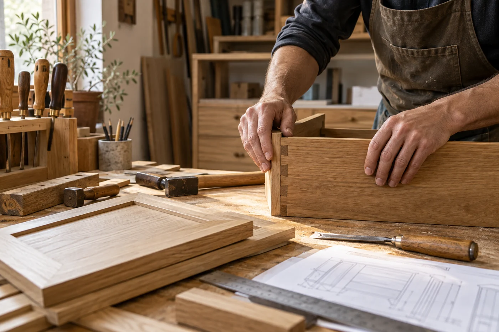

Materiály s charakterem
Dub, ořech, dýha i moderní povrchy. Pomůžeme vybrat materiál, který ladí s interiérem a zvládne každodenní život.
Dřevo. Struktura. Dotek.
Almara-3 · Truhlářství na míru
Máme rádi dřevo, promyšlené detaily a prostory, ve kterých se dobře žije. Každá zakázka pro nás začíná tím, že vám nasloucháme.

O nás
Dobrý nábytek začíná tím, že si rozumíme.
Jsme Almara-3. Truhlářství, ve kterém se potkává tradiční řemeslo se současným designem. Tvoříme nábytek, který se přizpůsobí vašemu prostoru, vašim zvyklostem i vašemu životu.
Od zaměření a návrhu přes výběr materiálů až po pečlivou montáž. S jedním partnerem a pozorností ke každému detailu.
Krása, kterou oceníte.
Kvalita, kterou pocítíte.
Poctivá práce.
Do posledního detailu.
Každý milimetr má
své místo i svůj smysl.
Nejdřív nasloucháme.
Potom navrhujeme.
Jak o své práci přemýšlíme
Každý interiér má jiný rytmus. Rodina potřebuje jiné úložné prostory než člověk, který pracuje z domova. Právě proto se ptáme na běžný den, na věci, které používáte, i na detaily, které vám dnes nevyhovují.
V návrhu propojujeme vzhled s konstrukcí a praktickým používáním. Řešíme, jak se otevírá zásuvka, kam vede kabel, jak se čistí povrch i kolik místa zbývá kolem nábytku. Materiály vybíráme v souvislosti s konkrétním účelem a rozpočtem.
Působíme v Teplicích a okolí. Naším cílem je srozumitelná spolupráce, ve které víte, co se připravuje a co následuje. Od první konzultace po předání hotového nábytku.
Prohlédnout naše službyRozdíl je v detailech
Nezáleží jen na tom, jak nábytek vypadá.
Ale i na tom, jak se vám s ním žije.
Dub, ořech, dýha i moderní povrchy. Pomůžeme vybrat materiál, který ladí s interiérem a zvládne každodenní život.
Lehké otevírání, tiché dovírání a kování, na které se můžete spolehnout. Malé věci, které dělají velký rozdíl.
Promyšlený každý pohyb.Šikminy, výklenky, vysoké stropy. Tam, kde běžný nábytek končí, začínají možnosti řešení na míru.
Přesně pro váš prostor.